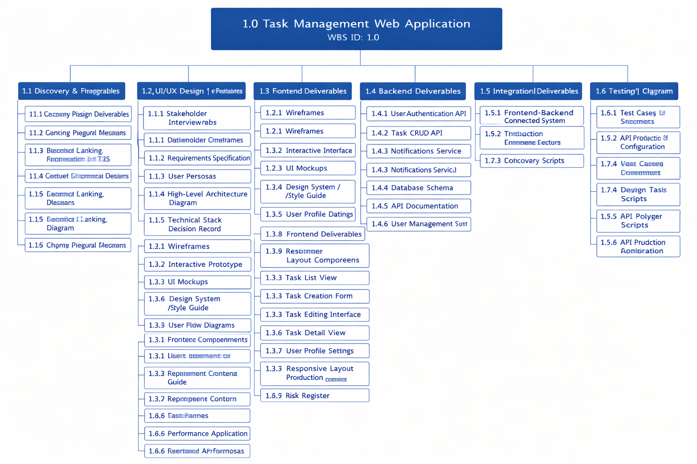

Work Breakdown Structure & Gantt Chart
Work Breakdown Structure (WBS)
Before diving into timelines and dependencies, it is essential to understand how the project's work is organized. The Work Breakdown Structure (WBS) provides a hierarchical decomposition of all deliverables and tasks required to complete the project. It serves as the foundation for planning, assigning responsibilities, and tracking progress.
Work Breakdown Structure

The WBS breaks the project into major work packages, including:
Discovery & Prerequisites
UI/UX Design & Prototyping
Frontend Development
Backend Development
Integration
Testing & Quality Assurance
Finalization & Release
Each of these packages is further broken down into detailed, manageable tasks, ensuring the full project scope is captured before scheduling begins.
Why the WBS Matters
The WBS is the cornerstone of the project schedule. According to the Project Management Institute (PMI), the WBS must include 100% of the work defined by the project scope—a principle known as the 100% Rule. Every activity in the Gantt chart originates from a WBS element. This structure ensures that:
- No tasks are overlooked
- Dependencies between tasks are easier to identify
- The schedule remains aligned with the defined project scope
With the WBS established, the next step is to translate these work packages into a time-phased project plan.
Gantt Chart: Visualizing Timelines and Dependencies
The Gantt chart builds on the WBS by providing a visual timeline of how the work unfolds. It illustrates:
Gantt Chart - Project Timeline

This chart maps the project lifecycle—from discovery through design, development, integration, testing, and final release. By reviewing the Gantt chart, team members can clearly see:
- How their tasks fit into the broader timeline
- Which activities depend on others
- Where the critical path lies
- When major milestones are expected
Interpreting the Gantt Chart
To help team members navigate the schedule effectively, the Gantt chart highlights the following key elements:
Timelines
Each horizontal bar represents the planned duration of a task or phase.
Dependencies
Linked bars show task relationships—e.g., a task cannot begin until a predecessor is complete.
Milestones
Diamond markers indicate major checkpoints, such as:
- Requirements Finalized
- UI/UX Design Approved
- Frontend MVP Complete
- Backend APIs Complete
- System Integration Complete
- Testing Complete
- Final Release Ready
Critical Path
Highlighted tasks represent the sequence of activities that determine the project's minimum duration. Any delay in these tasks will directly delay the overall project.
Summary
Together, the WBS and Gantt chart provide a complete and integrated view of the project's scope and schedule. By reviewing both artifacts, team members gain a clear understanding of:
This combination supports better planning, coordination, and execution—empowering the team to deliver successfully.
References
Doing-projects.org. (2015). Integrated cost and schedule control. Retrieved from http://wiki.doing-projects.org
Kim, S. D. (n.d.). Project management and practice. Kendall Hunt Higher Education.
ONES.com. (2025). Work breakdown structure (WBS) - Gantt chart glossary. Retrieved from https://ones.com/gantt-chart/glossary/wbs
Project Management Institute. (2013). A guide to the project management body of knowledge (PMBOK® guide) (5th ed.). Author.
University of Tasmania. (2018). Project management (2nd ed.).